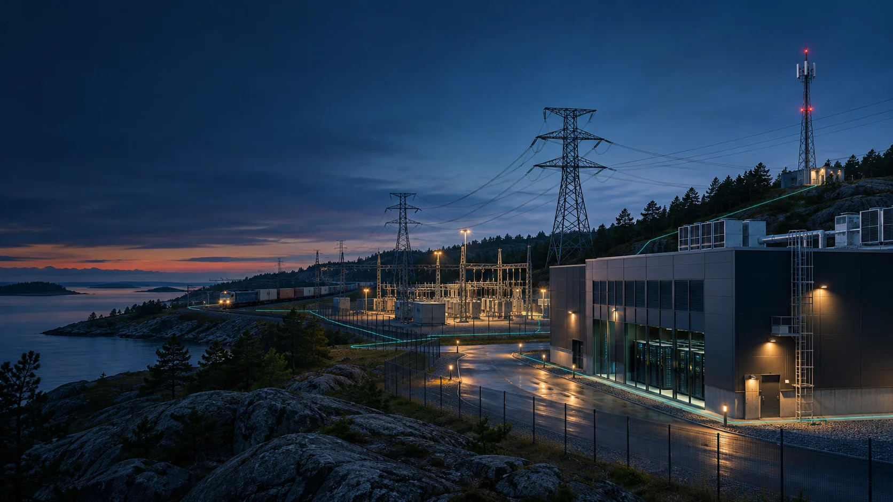

Existing servers
Use suitable customer infrastructure after capacity, access and integration assessment.

Reference solutions / Illustrative scopes
Choose an example that resembles your environment. Together, we define the assets, data sources, review workflow and limits of the project.
Three possible starting points
These examples are proposals for discussion. Equipment, interfaces, outputs and commercial terms are determined for each project.
01 / Reference configuration
Start with one facility or service chain. Bring permitted facility telemetry and infrastructure events together with the asset and dependency records.
Example deliverablesA dependency map, a monitoring view and evidence-linked findings for operations review.
Discuss this scope
02 / Reference configuration
Start with a selected substation or asset group. Connect available condition signals, maintenance records and network context within agreed access boundaries.
Example deliverablesA reviewed asset baseline, abnormal-pattern findings and a prioritized engineering review queue.
Discuss this scope03 / Reference configuration
Start with one business-critical service. Connect infrastructure events, service dependencies and available incident records without assuming access to every system.
Example deliverablesA service dependency view, correlated observations and recovery recommendations for the responsible team.
Discuss this scopeDeployment choices
Use suitable customer infrastructure after capacity, access and integration assessment.
Define compute and data boundaries for a dedicated deployment under the agreed ownership model.
Assess a chosen cloud environment against the project’s data, connectivity and operational requirements.
What we agree together
The service boundary, asset group and dependencies included.
Available signals, historical records, permissions and data handling.
Dashboards, review tasks, evaluation evidence and acceptance criteria.
Assessment, deployment, integration, compute, licensing and support—priced by agreed scope, with no fixed rates implied.
Your infrastructure. A practical starting point.
Explore how Nordic Labs Tech Oy can help assess, modernize, and strengthen the resilience of your critical infrastructure.
A no-cost pilot may be available. Subject to mutual interest and a prior written agreement.
critical@nordiclabs.tech